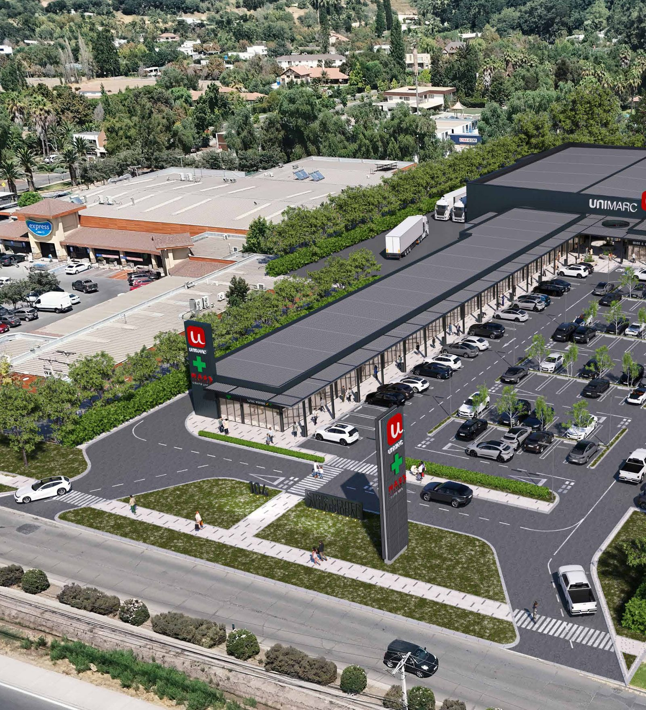
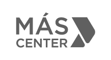

<!-- ════════════════════════════════════════════════════════════════════════
     SECCIÓN 13 — CONSTRUIMOS ESPACIOS
     ────────────────────────────────────────────────────────────────────
     Vista previa:  vista-previa/13-*.jpg
     Archivos que usa:
       · recursos/imagenes/hero-aerea.jpg
       · recursos/logos/logo-mascenter-gris.png
     ════════════════════════════════════════════════════════════════════
     Pega TODO este archivo dentro de un bloque «HTML personalizado».
     Antes tiene que estar pegado UNA sola vez 00-estilos-base.html.
     ════════════════════════════════════════════════════════════════════════ -->
<style>
/* ── CONSTRUIMOS ──────────────────────────────────────────────── */
.construimos{background:linear-gradient(180deg,#EDEDED 0%,#FAFAFA 100%);
  display:grid;grid-template-columns:1fr 1fr;align-items:center;gap:clamp(30px,4vw,70px);
  padding:0 0 clamp(50px,6vw,90px)}
.construimos .foto{overflow:hidden;align-self:stretch;min-height:clamp(420px,46vw,660px);position:relative;
  clip-path:polygon(24% 0,100% 0,76% 100%,0 100%)}
.construimos .foto img{position:absolute;inset:0;width:100%;height:100%;object-fit:cover}
.construimos .texto{padding:clamp(50px,6vw,96px) clamp(28px,4vw,64px) clamp(30px,4vw,60px) 0;max-width:640px}
.construimos h2{font-size:clamp(1.9rem,3.6vw,2.9rem);font-weight:700;line-height:1.12;color:var(--rojo)}
.construimos .invita{font-size:clamp(.95rem,1.6vw,1.15rem);font-weight:400;color:var(--texto-med);
  margin-top:18px;letter-spacing:.01em}
.construimos p.cuerpo{font-size:.94rem;color:var(--texto-med);margin-top:20px;line-height:1.7}
.construimos .logo-mc{margin-top:38px;width:190px;opacity:.85}

</style>

<!-- ════════════ CONSTRUIMOS ESPACIOS ════════════ -->
<section class="construimos">
  <div class="foto fade-in">
    
  </div>
  <div class="texto">
    <h2 class="fade-up">Construimos espacios<br>que impulsan negocios.</h2>
    <p class="invita fade-up d1">Te invitamos a ser parte de Más Center.</p>
    <p class="cuerpo fade-up d2">Nuestra red de más de 30 centros comerciales vecinales se enfoca en
      potenciar ubicaciones estratégicas y crear espacios comerciales eficientes, atractivos y de
      alto rendimiento.</p>
    <p class="cuerpo fade-up d3">Diseñamos proyectos que combinan marcas ancla, flujo constante y
      excelencia operacional, generando entornos que impulsan las ventas y aseguran resultados
      sostenibles en el tiempo.</p>
    <p class="cuerpo fade-up d3">Con presencia a lo largo del país, Más Center se posiciona como un
      socio estratégico para operadores e inversionistas que buscan crecer en ubicaciones
      consolidadas y con proyección.</p>
    
  </div>
</section>
